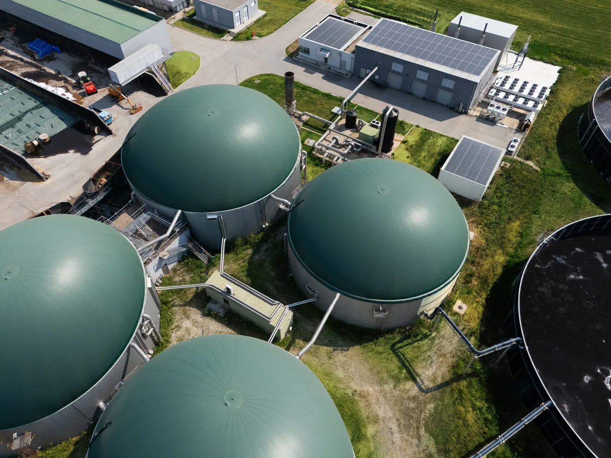
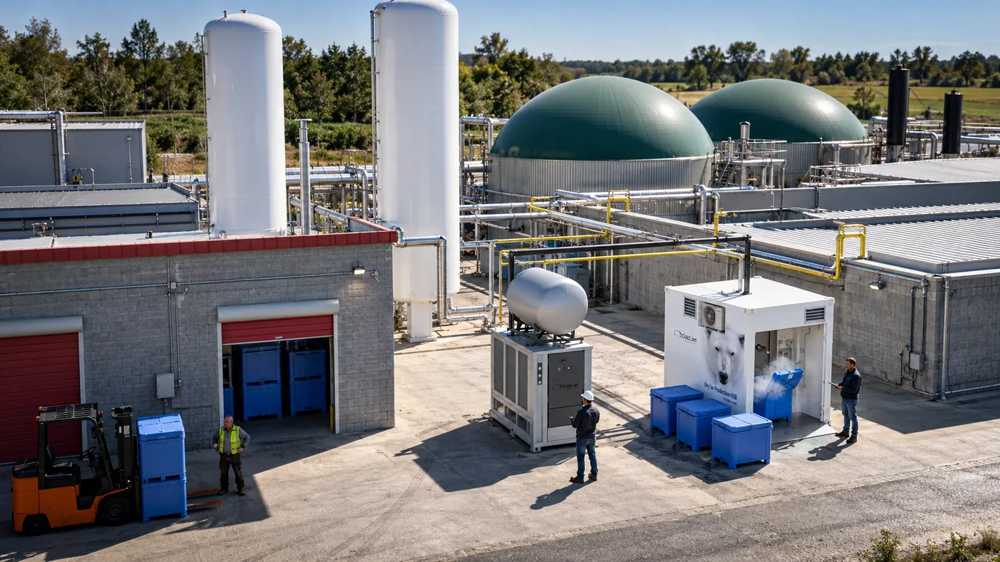
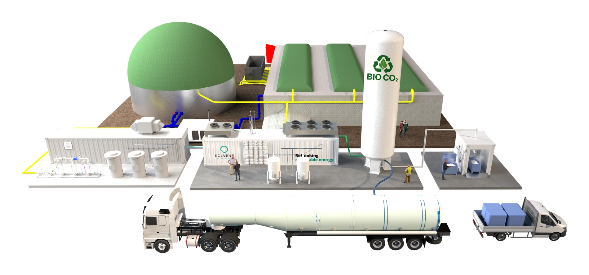
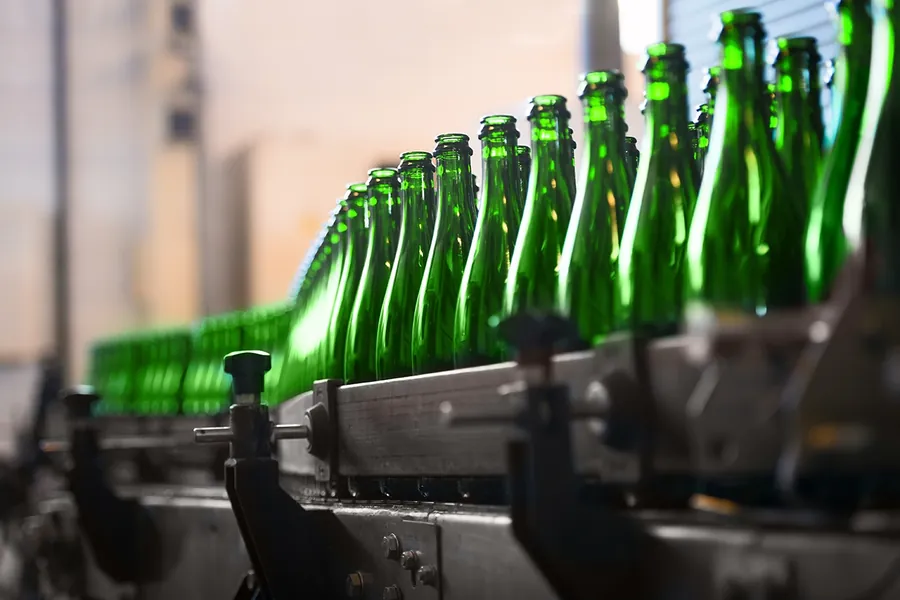
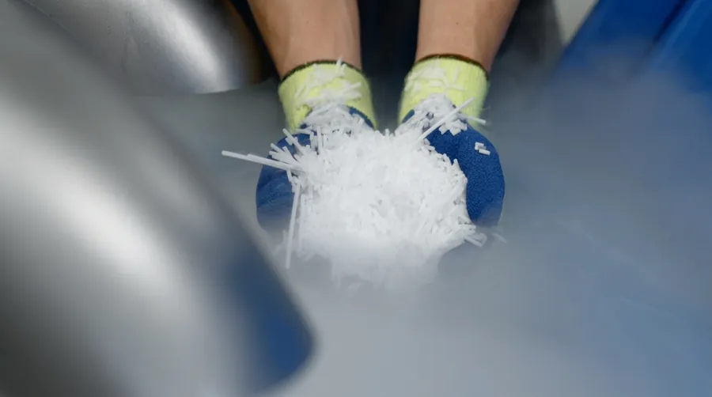
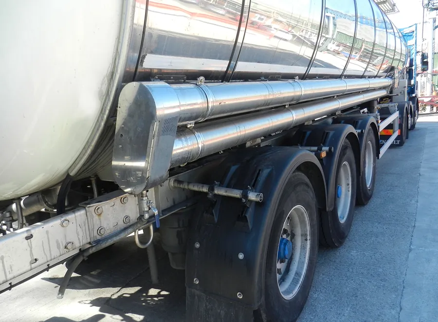
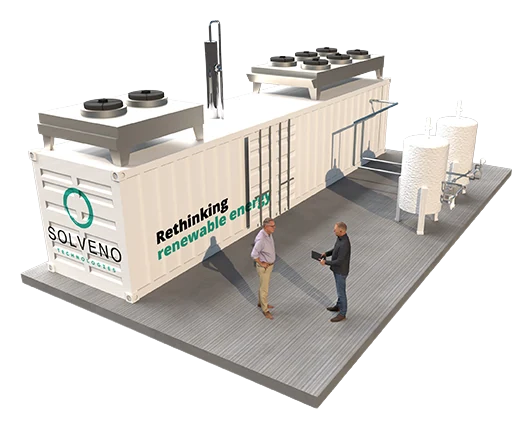
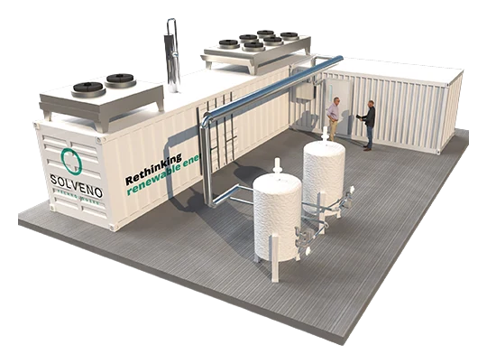
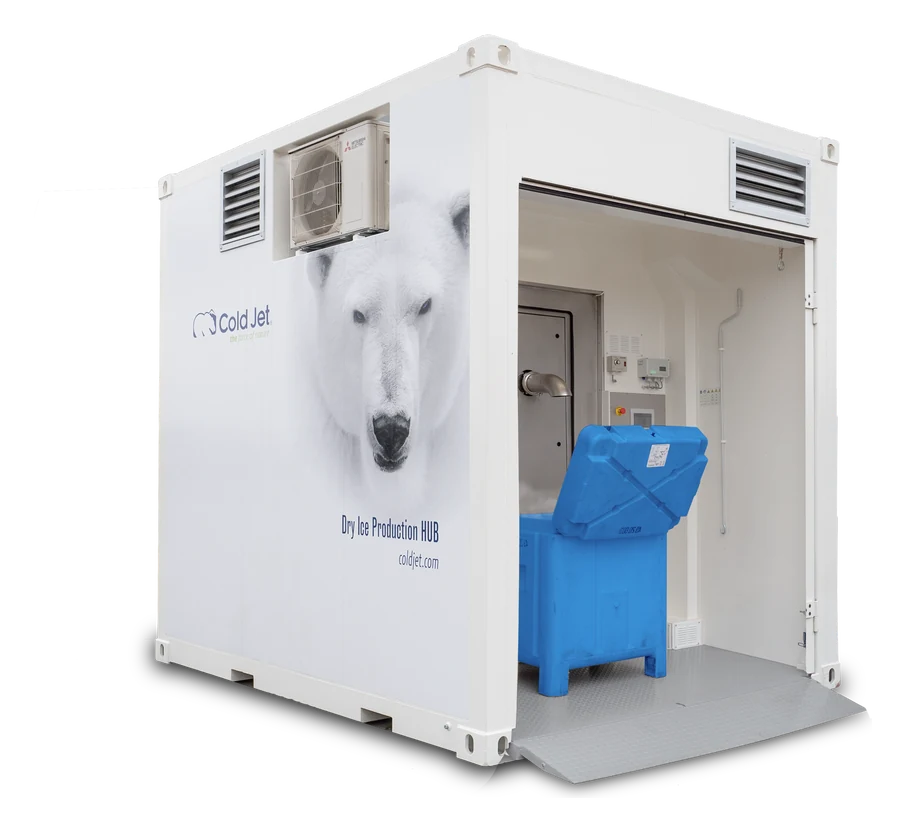
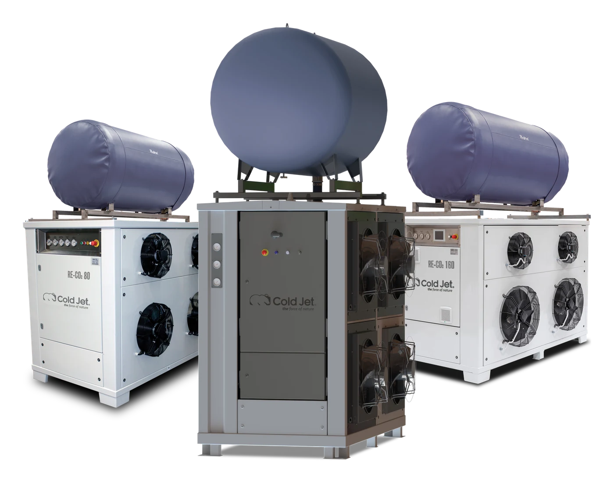

CO2를 대기로 배출할 때
대부분의 바이오가스, RNG 시설은 분리된 CO2를 그대로 배출합니다. CO2는 수익이 되지 못하고, 가스에 남아 있던 메탄도 함께 빠져나갑니다.
- CO2
- 판매하지 못하고 대기로 배출
- 잔류 메탄
- CO2와 함께 배출
- 탄소집약도 점수
- 개선되지 않음
바이오가스 탄소포집은 고질화 설비에서 분리되어 배출되던 CO2 오프가스를 포집해 정제하고 액화하는 공정입니다. 가스에 남아 있던 메탄도 함께 회수합니다.
Cold Jet은 포집과 액화, 드라이아이스 생산까지를 컨테이너형 장비로 구성합니다. 바이오가스, RNG 시설에 필요한 구성을 안내합니다.
원료 바이오가스는 60~75%가 메탄이고 나머지 대부분이 CO2입니다. 고질화에서 분리된 CO2를 어떻게 처리하느냐에 따라 시설의 수익과 배출량이 달라집니다.

대부분의 바이오가스, RNG 시설은 분리된 CO2를 그대로 배출합니다. CO2는 수익이 되지 못하고, 가스에 남아 있던 메탄도 함께 빠져나갑니다.

CO2를 포집해 액화하면 남아 있던 메탄을 거의 모두 회수하고, 판매할 수 있는 액체 CO2를 얻습니다. 이것을 드라이아이스로 만들면 수익이 더 커집니다.
배출하던 가스에서 판매할 제품이 나오고, 메탄이 대기로 나가지 않습니다. 아래 숫자는 Cold Jet이 공개한 수치이며, 실제 결과는 바이오가스 조성과 시설 규모, 지역 수요, 운전 조건에 따라 달라집니다.
남아 있던 메탄을 배출하지 않고 회수합니다. 메탄 슬립이 없는 것은 엄격한 환경 기준에서 자주 요구되는 조건입니다.
CO2를 포집하고 메탄을 회수하면 고질화한 바이오가스의 탄소집약도(CI) 점수가 낮아집니다.
바이오가스에서 나온 CO2에는 불순물이 많습니다. CB 시스템은 이를 정제해 순도 99.9%를 넘는 액체 CO2로 만듭니다.
포집한 CO2는 메탄, 소화액과 별도로 수익을 냅니다. 액체 CO2로 판매하거나 드라이아이스로 만들어 판매합니다.
드라이아이스 공급이 부족한 지역이 많습니다. 현장에서 만든 드라이아이스는 멀리서 운송한 것보다 승화 손실이 적습니다.
포집 장비와 드라이아이스 생산 장비는 컨테이너형입니다. 별도의 건물 없이 기존 고질화 설비에 추가하는 방식으로 설치합니다.
운전자가 거의 개입하지 않아도 스스로 운전하고, 고질화 설비에서 들어오는 유량의 변화에 맞춰 운전합니다.
액화 시스템의 냉매로 CO2(R744)를 씁니다. 합성 냉매는 쓰지 않습니다.
기존 고질화 설비 뒤에 포집, 저장, 생산 장비를 차례로 연결합니다. 다섯째 단계의 회수 장비는 선택 사항입니다.

원료 바이오가스를 바이오메탄과 CO2로 분리합니다. 바이오메탄은 가스 배관망으로 보내고, 분리된 CO2 오프가스가 포집 대상이 됩니다.
고질화 설비 뒤에서 오프가스를 받아 불순물을 제거하고, R744 냉매로 CO2를 응축해 액화하면서 남아 있던 메탄을 회수합니다. Solveno Technologies의 특허 액화 기술을 씁니다.
액체 CO2를 현장의 탱크에 저장합니다. 탱크로리로 식음료 업체, 용접 가스 공급사, 온실 등에 보내거나 드라이아이스 생산 장비로 공급합니다.
CO2 스노우를 압축해 펠렛이나 너겟으로 만듭니다. 펠렛타이저의 생산량은 시간당 120 kg부터 1,500 kg까지입니다.
생산 중에 다시 기체로 변한 CO2를 회수해 드라이아이스 생산에 다시 씁니다. 같은 액체 CO2로 더 많은 드라이아이스를 만듭니다.
Cold Jet은 지역의 CO2, 드라이아이스 수요를 찾는 일을 돕습니다. Cold Jet CONNECT로 장비를 원격에서 모니터링하고 진단합니다.
정제하고 액화한 CO2는 여러 시장에 판매할 수 있습니다. Cold Jet은 지역의 CO2, 드라이아이스 수요와 구매처를 찾는 일을 돕습니다.

음료와 식품 가공에 쓰고, 원예와 채소 작물 온실의 CO2 공급에 씁니다.

드라이아이스 생산 모듈을 더하면 현장에서 액체 CO2를 드라이아이스로 만듭니다. 생산 설비는 Dry Ice Production Hub에 담겨 공급됩니다.

합성 연료의 원료로 쓰거나 CCS, 광물화로 영구 저장합니다. Cold Jet은 2050년 탄소중립 목표에 따라 이 수요가 늘 것으로 보고 있습니다.
CO2를 포집해 액화하는 CB 시스템 두 모델과, 드라이아이스 생산 설비를 컨테이너 하나에 담은 Dry Ice Production Hub, 선택 사양인 RE-CO2입니다. CB 시스템은 시간당 최대 4,500 kg까지 구성합니다.

오프가스를 시간당 최대 600 Nm³까지 처리합니다. 40 ft 컨테이너 1대로 공급되며 자동으로 운전합니다.
모델 상세 보기→
오프가스를 시간당 최대 850 Nm³까지 처리합니다. 공급 유량의 변화에 맞춰 자동으로 운전합니다.
모델 상세 보기→
PR120H 또는 PR350H를 10 ft 하이큐브 ISO 컨테이너에 담았습니다. 전원, 액체 CO2, 계장 공기만 연결합니다.
장비 보기→
드라이아이스 생산 중에 발생하는 플래시 가스를 회수해 다시 액화합니다. 표준 용량은 네 가지입니다.
장비 보기→고질화 설비의 방식과 오프가스 유량, 바이오가스 조성, 필요한 생산량을 알려 주시면 Cold Jet과 함께 시설에 맞는 용량과 구성을 검토해 드립니다.
바테크는 Cold Jet의 대한민국 공식 대리점으로 검토부터 설치, 교육과 A/S까지 지원합니다. 드라이아이스 생산에 쓰는 CO2 회수 장비는 CO2 리커버리 페이지에서 먼저 확인하실 수 있습니다.